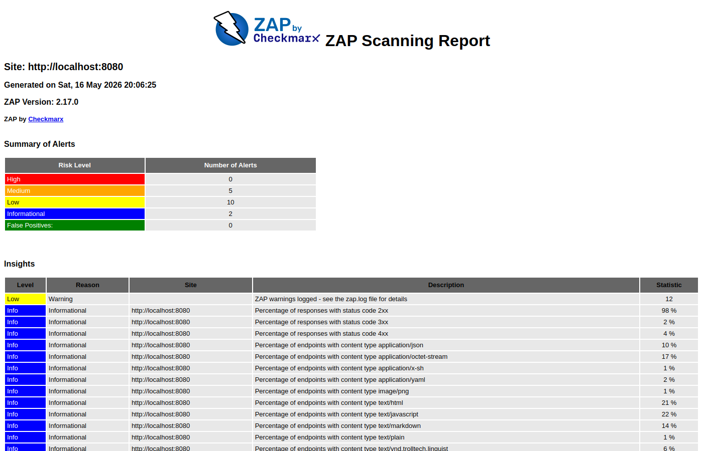
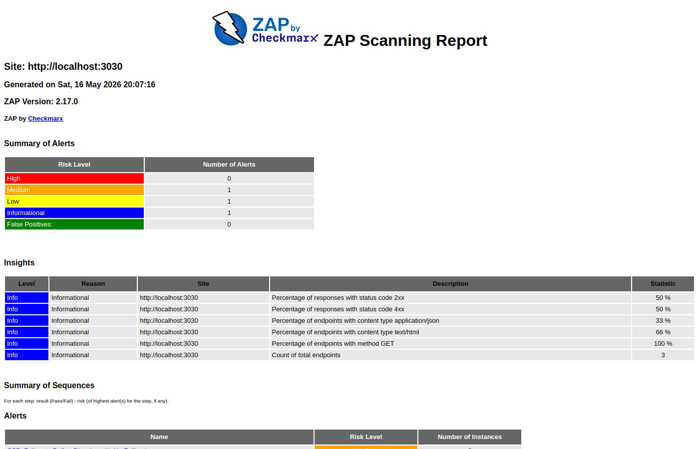
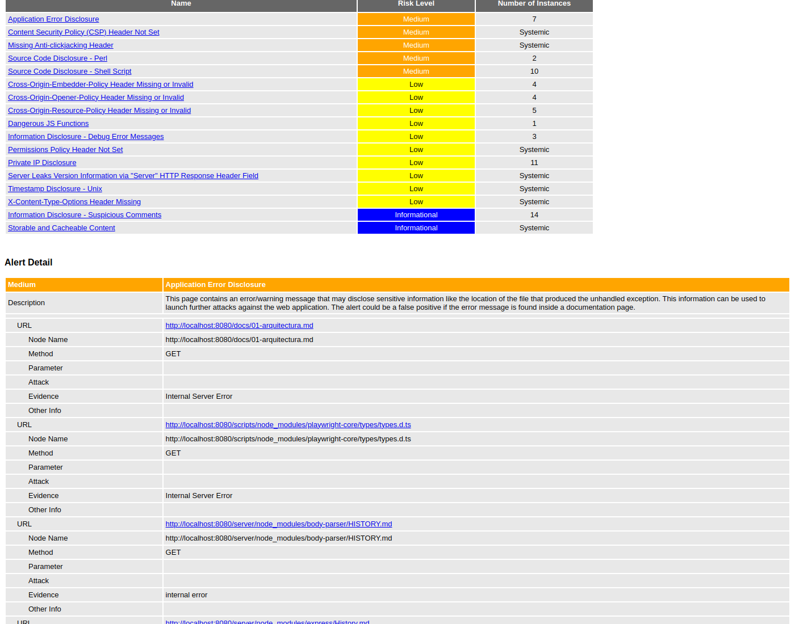

Guía práctica final DevSecOps · DAST · SAST
Análisis de seguridad en aplicaciones web y APIs
Introducción
Esta entrega cubre la guía práctica final de Ingeniería Web (Ing. Jairo A. Salcedo Aranda), articulando los 7 temas en un único hilo: investigación → SAST → matriz → pen-test API → escaneo web → bitácora → documentación de la herramienta. Toda la evidencia es reproducible y los artefactos están versionados en el repositorio.
Tema 1 · Investigación de herramientas
Se evaluaron las herramientas sugeridas por la guía más Semgrep como SAST moderno.
| Herramienta | Tipo | Licencia | Ejecución | Encaje con el proyecto |
|---|---|---|---|---|
| OWASP ZAP | DAST | Apache 2.0 | GUI, CLI, Docker | Elegida — escanea la app corriendo |
| Semgrep | SAST | LGPL | CLI, Docker, GitLab CI | Elegida — liviano, integración nativa |
| SonarQube | SAST + calidad | Comm./Enterprise | Servidor Java | Sobredimensionado para un proyecto académico |
| Burp Suite | DAST + proxy | Free / Pro | App Java | Free limita escáner automático |
| Nikto | DAST clásico | GPL | Script Perl | Antiguo, foco en webservers tradicionales |
| Nmap | Reconocimiento | Open | CLI | Escáner de red, no de app web |
Comparativa de criterios
| Criterio | ZAP | Semgrep | Burp Free | SonarQube | Nikto |
|---|---|---|---|---|---|
| Cobertura OWASP Top 10 | Alta | Alta (SAST) | Media | Media | Baja |
| Falsos positivos | Medios | Bajos | Medios | Bajos | Altos |
| Integración CI | Buena | Excelente | Manual | Plugin | Manual |
| Velocidad (este proyecto) | ~1 min | ~10 s | Manual | ~30 s | ~1 min |
| Requisitos | Java / Docker | Docker | Java | Java + DB + RAM | Perl |
Selección justificada
OWASP ZAP (DAST) + Semgrep (SAST). Justificación: complementariedad caja negra / caja blanca, costo cero, integración limpia con Docker + GitLab CI, output JSON parseable, y descarte de SonarQube por requerir infraestructura Java + DB que sobrepasa el alcance académico.
Tema 2 · Implementación de SAST en GitLab
2.1 Stage añadida al pipeline
Antes el .gitlab-ci.yml solo desplegaba a Pages. Se añadió la stage sast con Semgrep:
stages:
- validate
- sast ← nuevo
- build
- deploy
sast:
stage: sast
image: returntocorp/semgrep
script:
- semgrep scan
--config=p/javascript
--config=p/nodejsscan
--config=p/xss
--config=p/expressjs
--config=p/jwt
--config=p/secrets
--json --output semgrep-report.json
--severity WARNING --severity ERROR
server/ public/ || true
artifacts:
paths: [semgrep-report.json]
expire_in: 1 month
when: always
allow_failure: true
2.2 Ejecución local (preview de la corrida en CI)
Se ejecutó el mismo comando vía Docker antes del push para validar el output:
$ docker run --rm -v "$PWD":/src:ro semgrep/semgrep semgrep scan \
--config=p/javascript --config=p/nodejsscan --config=p/xss --config=p/expressjs \
--severity WARNING --severity ERROR server/ public/
┌─────────────────┐
│ 3 Code Findings │
└─────────────────┘
public/app/app.js
❯❱ ajinabraham.njsscan.crypto.timing_attack_node.node_timing_attack [Warning]
123┆ else if (hash === 'dashboard') renderDashboard();
124┆ else if (hash === 'admin') {
server/server.js
❯❱ ajinabraham.njsscan.generic.hardcoded_secrets.node_username [Warning]
113┆ user.algo = 'bcrypt';
┌──────────────┐
│ Scan Summary │
└──────────────┘
✅ Scan completed successfully.
• Findings: 3 (3 blocking)
• Rules run: 165
• Targets scanned: 31
Los 3 hallazgos se analizan en el tema 3 — los tres son falsos positivos justificados.
Tema 3 · Matriz de vulnerabilidades
Consolida las 3 fuentes: pen-test manual con curl, SAST con Semgrep, DAST con OWASP ZAP.
| ID | Hallazgo | Origen | Severidad | ¿Real? | Estado |
|---|---|---|---|---|---|
| V-01 | Sin rate-limit en login | Manual | CRÍT | Sí | Cerrado |
| V-02 | Faltan headers de seguridad | ZAP + Manual | ALTA | Sí | Cerrado |
| V-03 | CORS abierto a todo origen | ZAP + Manual | ALTA | Sí | Cerrado |
| V-04 | X-Powered-By: Express expuesto | ZAP + Manual | MEDIA | Sí | Cerrado |
| V-05 | SHA-256 rápido para passwords | Auditoría | ALTA | Sí | Cerrado |
| V-06 | Login timing-attackable | Auditoría | MEDIA | Sí | Cerrado |
| V-07 | Payload sin tope de tamaño (DoS) | Manual | MEDIA | Sí | Cerrado |
| V-08 | Source Code Disclosure (.git/hooks) | ZAP | MEDIA | Parcial | Solo afecta dev local |
| V-09 | Application Error Disclosure (md de node_modules) | ZAP | MEDIA | Parcial | Solo afecta dev local |
| V-10 | Permissions-Policy ausente | ZAP | BAJA | Sí | Por cerrar |
| V-11 | CSP fallback en 404 | ZAP | MEDIA | Parcial | Cosmético |
| V-12 | COEP header ausente | ZAP | BAJA | No | FP |
| V-13 | Storable/Cacheable content | ZAP | INFO | No | FP |
| V-14 | Timing attack en routing (Semgrep) | Semgrep | BAJA | No | FP |
| V-15 | Hardcoded username (Semgrep) | Semgrep | BAJA | No | FP |
| V-16 | Bcrypt hash detected (Semgrep) | Semgrep | BAJA | No | FP |
| V-17 | Sin logging estructurado | Auditoría | MEDIA | Sí | Deuda |
| V-18 | Token en localStorage | Auditoría | MEDIA | Sí | Deuda |
| V-19 | Sin verificación de email | Auditoría | BAJA | Sí | Deuda |
Distribución por severidad
| Severidad | Total | Cerradas | Deuda / contexto | Falsos positivos |
|---|---|---|---|---|
| Crítica | 1 | 1 | 0 | 0 |
| Alta | 3 | 3 | 0 | 0 |
| Media | 8 | 5 | 2 | 1 |
| Baja | 4 | 0 | 3 | 1 |
| Informativa | 1 | 0 | 0 | 1 |
| Semgrep FP | 2 | 0 | 0 | 2 |
| Totales | 19 | 9 | 5 | 5 |
Falsos positivos — análisis
| ID | Hallazgo | Por qué se descarta |
|---|---|---|
| V-12 | COEP ausente | Header opcional. La SPA no embebe contenido cross-origin ni usa SharedArrayBuffer. Aplicarlo rompería futuros embeds de fonts |
| V-13 | Storable/Cacheable | La SPA es estática, su cacheo es comportamiento deseado |
| V-14 | === en rutas | Compara contra strings constantes ('dashboard', 'admin'), no contra material criptográfico |
| V-15 | user.algo = 'bcrypt' | Es la etiqueta del algoritmo de hashing, no un username |
| V-16 | Bcrypt hash en server.js:216 | Hash dummy intencional usado en bcrypt.compare cuando el email no existe — defensa anti-enumeración por timing |
Priorización de la deuda
- V-17 Logging estructurado (
pino): habilita detección de futuros incidentes. - V-10 Permissions-Policy: fix de una línea en la configuración de
helmet. - V-18 Token a cookie HttpOnly: requiere cambios coordinados frontend + backend.
- V-19 Verificación de email: requiere proveedor SMTP; alcance mayor.
Tema 4 · Pen-test sobre la API
Cubierto en detalle en la investigación de hardening. Resumen contra las categorías de la guía:
| Categoría | Resultado |
|---|---|
| Autenticación | ✅ rate-limit + bcrypt + timing-safe |
| Autorización | ✅ RBAC + propiedad del recurso (IDOR mitigado) |
| Validación de parámetros | ✅ tipos + longitud máxima por campo |
| Inyección | ✅ N/A (no BD, no shell); XSS mitigado en frontend |
| Exposición de información | ✅ headers correctos + handler global sin stack |
Tema 5 · Escaneo de la aplicación web
Se utilizó OWASP ZAP 2.17.0 vía Docker, modalidad zap-baseline.py (pasivo).

.git/ y node_modules/.

Reportes exportados
Categorías de la guía cubiertas
| Categoría | Estado |
|---|---|
| XSS | No encontrado — todo HTML pasa por escapeHtml |
| SQL Injection | N/A — no hay base de datos |
| Headers inseguros | Mitigado con helmet |
| Cookies inseguras | N/A — token Bearer en localStorage |
| Configuraciones débiles | Cerrado — CORS allowlist, sin X-Powered-By, límites de body |
Tema 6 · Bitácora técnica — OWASP ZAP
Configuración utilizada
| Parámetro | Valor |
|---|---|
| Versión | OWASP ZAP 2.17.0 |
| Imagen Docker | zaproxy/zap-stable |
| Modo | zap-baseline.py (passive + spider ligero) |
| Network | --network=host para alcanzar localhost del host |
| Flags | -I (no fallar con warnings), -r HTML, -J JSON |
Tiempos y resultados
| Target | Duración | URLs | Alerts |
|---|---|---|---|
| Frontend (raíz del repo) | 43 s | ~80 | 14 |
| Backend hardened | 34 s | ~10 | 3 |
Lecciones
- Servir el repo completo con
python3 -m http.serverpara hacer DAST genera ruido: ZAP escanea.git/,node_modules/,docs/. Ese ruido no aparece en GitLab Pages (que sólo publicapublic/). Para validar el deploy real, scan contra la URL de Pages, no contra la raíz local. zap-baselinees pasivo: no inyecta payloads. Para encontrar XSS reflejado o stored hay que correrzap-full-scan(activo, ~5 min).-Ievita falsos rojos en CI: sin él, el script retorna exit-code ≠ 0 con cualquier warning y bloquea el pipeline.
Tema 7 · Documentación de OWASP ZAP
Identificación
| Campo | Detalle |
|---|---|
| Nombre | OWASP ZAP (Zed Attack Proxy) |
| Versión usada | 2.17.0 |
| Mantenedor | The OWASP Foundation (patrocinado por Checkmarx desde 2024) |
| Licencia | Apache License 2.0 |
| Sitio oficial | zaproxy.org |
Objetivo
Detectar vulnerabilidades en aplicaciones web mediante análisis dinámico (DAST): interactúa con la app como un usuario real, observa headers, cuerpos y comportamiento, y reporta hallazgos clasificados por riesgo.
Modos de operación
- Pasivo: sólo observa el tráfico, sin enviar payloads.
- Activo: inyecta payloads conocidos (XSS, SQLi, path traversal).
- Manual: actúa como proxy MITM para análisis manual.
Requisitos e instalación
$ docker pull zaproxy/zap-stable $ mkdir -p docs/seguridad/dast
Ejecución básica
$ docker run --rm --network=host \
-v "$PWD/docs/seguridad/dast":/zap/wrk/:rw \
-t zaproxy/zap-stable \
zap-baseline.py \
-t http://localhost:3030/ \
-r zap_api_report.html \
-J zap_api_report.json \
-I
| Argumento | Función |
|---|---|
-t URL | Target |
-r FILE | Reporte HTML |
-J FILE | Reporte JSON |
-I | No fallar exit-code con warnings |
-j | Spider con JavaScript (útil para SPAs) |
-l RISK | Filtrar por nivel mínimo |
-T MIN | Tiempo máximo de escaneo |
Interpretación de resultados
ZAP clasifica cada alerta con dos ejes: Risk (High / Medium / Low / Informational) y Confidence (qué tanto confía ZAP en que el hallazgo es real). Cada alerta incluye descripción, CWE, referencia OWASP, URL afectada, snippet de evidencia y recomendación.
Buenas prácticas
- Empezar siempre por baseline pasivo: no perturba la app ni contamina la BD.
- Correrlo contra un entorno desechable: el escaneo activo crea usuarios, comentarios, etc.
- Versionar el reporte JSON: permite seguir la evolución de hallazgos (regression-testing de seguridad).
- Integrar en CI con
allow_failure: true: que informe, no que bloquee. - Excluir paths de ruido con
-c .zap-config. - Usar Desktop para investigar manualmente cuando una alerta es ambigua: el proxy permite reenviar la petición exacta y probar la mitigación al vuelo.
Reproducir esta investigación
# Servicios locales
cd server && PORT=3030 NODE_ENV=development node server.js &
python3 -m http.server 8080 &
# SAST (Semgrep)
docker run --rm -v "$PWD":/src:ro semgrep/semgrep semgrep scan \
--config=p/javascript --config=p/nodejsscan --config=p/xss --config=p/expressjs \
--severity WARNING --severity ERROR server/ public/
# DAST (ZAP) - frontend
cd docs/seguridad/dast
docker run --rm --network=host -v "$PWD":/zap/wrk/:rw -t zaproxy/zap-stable \
zap-baseline.py -t http://localhost:8080/public/app/index.html \
-r zap_report.html -J zap_report.json -I
# DAST (ZAP) - backend
docker run --rm --network=host -v "$PWD":/zap/wrk/:rw -t zaproxy/zap-stable \
zap-baseline.py -t http://localhost:3030/ \
-r zap_api_report.html -J zap_api_report.json -Idocs/seguridad/; los reportes navegables en
public/entregables/analisis-seguridad/.